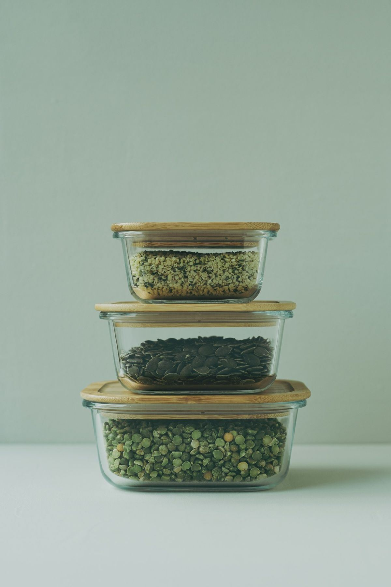

Gift guide
Kitchen Gift Basket Ideas for People Who Meal Prep

This guide contains affiliate links. If you buy through them, Holistic Life may earn a small commission at no extra cost to you. How we use affiliate links.
Quick answer
- Good meal prep gifts make cooking ahead faster, tidier or safer.
- Safe picks: glass containers with locking lids, sheet pans, a sharp knife and an instant-read thermometer.
- For someone short on time, a ready-meal or meal kit gift can be kinder than a tool.
- Skip gadgets that do one job and take up cupboard space.
Anyone who cooks ahead knows the routine. Cook on one day, pack up the food and eat well on busy days. The right kitchen gift makes that routine faster or tidier. The wrong one takes space and gathers dust.
This is a nurse-run site, and the focus here is on tools that make cooking at home more practical. The aim is to save time and make food easier to pack and store. Give one item, or use the kitchen gift basket ideas further down to bundle a few.
How to choose a meal prep gift
Ask three quick questions.
- What does the person already own? Check the cupboards if you can. A duplicate slow cooker is a letdown. A better thermometer is not.
- How much room do they have? Small kitchens do better with nesting containers and flat pans than with large appliances.
- Will it be used weekly? Containers, pans and knives pass this test. Single-use gadgets often fail.
If you are unsure, choose the plain, sturdy version of something they already use every week. An upgrade to a daily tool is rarely wasted.
The gift list
The links open a current selection on Amazon. Each pick lists what to look for.
Glass meal prep containers with locking lids
These are the daily workhorses of meal prep. They go from fridge to microwave, do not hold onto smells and make packing lunch quick.
What to look for
- Locking lids with a silicone seal that closes firmly
- Microwave-, oven- and dishwasher-safe glass
- Sizes that stack and nest, plus a few divided ones
See glass containers on Amazon (paid link)
Rimmed sheet pans
A heavy sheet pan turns one batch of vegetables or chicken into several lunches, with easy cleanup.
What to look for
- Thick metal that does not warp in a hot oven
- A full rim so juices stay in the pan
- A set of two, so one can cook while another is prepped
See sheet pans on Amazon (paid link)
Slow cooker or multi-cooker
Load it in the morning and dinner is ready that evening. It is one of the best tools for soups, chili and pulled chicken for the week.
What to look for
- A size that fits the household, usually 6 quarts for a family
- A removable insert that is dishwasher safe
- A lock-in lid for carrying food to a party
See slow cookers on Amazon (paid link)
Rice cooker
A rice cooker handles a pot of grains without watching, which leaves the cook free to prepare everything else.
What to look for
- A keep-warm setting
- A non-stick inner pot that is easy to wash
- A capacity that matches how many portions they cook
See rice cookers on Amazon (paid link)
Chef's knife and cutting board
A sharp knife makes chopping faster and safer than a dull one. A large board gives room to work.
What to look for
- An 8-inch chef's knife with a comfortable handle
- A board with a groove for juices and a non-slip base
- A separate board for raw meat, if you want to give a pair
See knife and board sets on Amazon (paid link)
Silicone freezer trays for soup portions
Freeze soup, broth or sauce in measured blocks, pop them out and store them in a bag. Dinner for one then takes minutes to warm.
What to look for
- Trays with a lid and clear portion sizes
- Flexible, freezer-safe silicone
- Several trays in a set
See freezer trays on Amazon (paid link)
Insulated lunch bag
A well-made bag keeps meals cold until lunch and carries a full day of food.
What to look for
- A wipe-clean lining
- Room for two containers and an ice pack
- A strap that is comfortable to carry
See lunch bags on Amazon (paid link)
Reusable silicone bags
They hold chopped vegetables, marinated chicken or snacks, and they replace a lot of single-use plastic.
What to look for
- A strong seal that closes all the way
- Dishwasher-safe, freezer-safe silicone
- A set with a few sizes
See silicone bags on Amazon (paid link)
Instant-read food thermometer
A thermometer takes the guesswork out of cooking meat through, which matters when you are cooking in batches.
What to look for
- A reading in a few seconds
- A clear, backlit display
- A probe that folds away
See food thermometers on Amazon (paid link)
Salad spinner
Dry greens last longer in the fridge, and a spinner saves a lot of paper towels.
What to look for
- A pump or button that is easy to use
- A bowl that doubles as a serving dish
- A base that does not slide
See salad spinners on Amazon (paid link)
Three kitchen gift baskets to build
A basket turns a few small tools into one present. Skip the wicker and use something from the list as the container, so nothing goes to waste.
- The batch cook basket. A rimmed sheet pan as the tray, an instant-read thermometer, a set of glass containers and a roll of freezer labels.
- The packed lunch basket. An insulated lunch bag filled with two locking containers, an ice pack and a set of reusable cutlery.
- The new kitchen basket. A cutting board as the base, a chef's knife with a blade guard, a kitchen towel and a handwritten recipe card.
Add a note that says what each piece is for. Leave food out unless you know what the person eats, and let the tools be the gift.
A note on food safety
An instant-read thermometer earns a place on this list because it is the reliable way to know that meat is cooked through. FoodSafety.gov advises using a food thermometer and lists a safe minimum of 165 degrees Fahrenheit for poultry. That number applies to leftovers too. It is a small gift that makes safe cooking easier.
Give a meal kit or ready meals instead
Not everyone wants another tool. For someone who is tired, new to parenting or working long shifts, a few prepared dinners may help more than a pan.
- Factor sells ready-made meals that you heat up, so it suits someone who wants dinner with almost no cooking or cleanup.
- Home Chef sends fresh ingredients and a recipe, so it suits someone who still likes to cook and wants the planning and portioning done for them.
Check dietary needs and delivery areas before you buy, and think about whether the person will be home to receive the box.
Pair a gift with a plan
A container set goes further with a few good recipes. Pair it with a few ideas from our high protein dinners ready in 30 minutes. If the cook works nights, add our guide to meal prep for 12-hour shifts and night shift, which covers packing and timing.
What to skip
- Single-use gadgets. Avocado slicers and egg cookers fill drawers.
- Giant appliances. A big air fryer or a bread maker needs counter space that small kitchens do not have.
- Food items for health reasons. Skip supplements, powders and special diet foods. Those are personal choices.
- Matching sets with no storage plan. A huge set of containers can crowd a cupboard.
Frequently asked questions
What is a good gift for someone who meal preps?
Glass containers with locking lids are the safest bet, because nearly every meal prepper wears them out or loses a lid. A sheet pan set or an instant-read thermometer is a close second.
Is a meal kit a good gift?
It can be, if the person has a busy schedule. A gift that covers a few dinners can feel kinder than another gadget. Check any dietary needs before you choose.
Sources
Save this guide for later
Tap a pin to save it to your Pinterest boards.